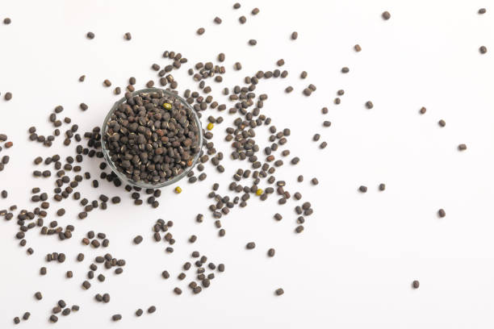
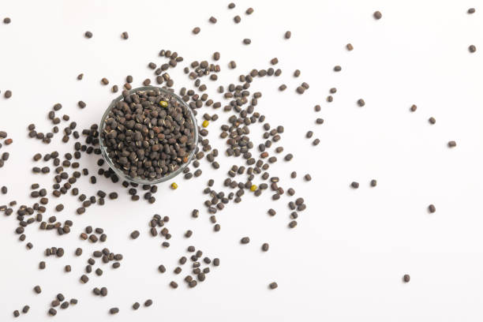

1.BLACK GRAM / 1.KA GRAM BA LIEH
 

Black gram, commonly grown in Meghalaya, is typically cultivated during the Kharif season, from June to September. It has significant market share in states like Maharashtra and Karnataka, where it's both sold and cultivated extensively. Black gram thrives in well-drained, loamy to sandy soils with a pH of 6.0 to 7.5. Optimal soil temperature ranges from 20°C to 30°C. The growing period is about 70-90 days, requiring moderate resources like water and fertilizers. Demand for black gram is particularly high in states like Tamil Nadu and Andhra Pradesh, where it's a staple in many dishes.
Ia u black gram, uba ju rep bha ha Meghalaya, la ju rep ha ka por Kharif, kata naduh u bnai Iaiong haduh u bnai September. U don ka bhah iew kaba khraw ha ki jylla kum ka Maharashtra bad Karnataka, ha kaba la die bad rep bha ia u. U gram uba lieh u san bha ha ki khyndew kiba don um bha, kiba jyrngam haduh kiba don ka pH kaba 6.0 haduh 7.5. Ka jingshit kaba bha tam jong ka khyndew ka long naduh 20°C haduh 30°C. Ka por ban san ka long kumba 70-90 sngi, kaba donkam ia ki jingdonkam kiba pdeng kum ka um bad ki sboh. Ka jingdawa ïa u gram lieh ka jur bha khamtam ha ki jylla kum ka Tamil Nadu bad Andhra Pradesh, ha kaba u dei u jingbam ba kongsan ha kiba bun ki jingbam.
2.GREEN GRAM / 2.KA GRAM BA JOH


Green gram, or mung bean, is primarily grown in Meghalaya during the Kharif season, from June to September. It has a significant market share in states like Maharashtra and Gujarat, where it is both cultivated and sold extensively. Green gram prefers well-drained, loamy or sandy soils with a pH of 6.0 to 7.5. Ideal soil temperature ranges from 20°C to 30°C. The growing period is about 60-75 days, requiring moderate water and nutrients. Demand is particularly high in states like Punjab and Haryana, where it is popular in various culinary dishes.
Ia u soh green gram, lane u soh mung, la rep nyngkong eh ha Meghalaya ha ka aiom kharif, kata naduh u bnai Jymmang haduh u bnai September. U don ka bhah iew kaba khraw ha ki jylla kum ka Maharashtra bad Gujarat, ha kaba la rep bad die bha ia u. U gram uba jyrngam u kham sngewtynnad ia ki khyndew kiba don um bha, kiba jylliew ne kiba don ka pH kaba long 6.0 haduh 7.5. Ka jingshit jong ka khyndew kaba biang ka long naduh 20°C haduh 30°C. Ka por ba u san ka long kumba 60-75 sngi, u donkam ia ka um kaba biang bad ki jingbam ba tei met. Ka jingdawa ka long kaba jur bha khamtam ha ki jylla kum ka Punjab bad Haryana, ha kaba u pawnam ha ki jingbam bapher bapher.
3.PIGEON PEA / 3.KA JINGPYNBNA


Pigeon pea, or arhar, is primarily grown in Meghalaya during the Kharif season, from June to September. It has a strong market presence in states like Maharashtra and Uttar Pradesh, where it is extensively cultivated and sold. Pigeon pea thrives in well-drained, loamy or sandy soils with a pH of 6.0 to 7.5. Optimal soil temperature ranges from 25°C to 30°C. The growing period is about 90-180 days, requiring moderate water and nutrient inputs. Demand is particularly high in states like Andhra Pradesh and Tamil Nadu, where it is a key ingredient in various dishes.
Ia u pigeon pea, lane u arhar, la thung nyngkong eh ha ka jylla Meghalaya ha ka aiom kharif, kata naduh u bnai Rymphang haduh u bnai September. U don ka jingdon iew kaba khlain bha ha ki jylla kum ka Maharashtra bad Uttar Pradesh, ha kaba la rep bad die bha ia u. U sohjew u san bha ha ki khyndew kiba don um bha, kiba rben ne kiba don ka pH kaba 6.0 haduh 7.5. Ka jingshit jingkhriat kaba bha tam jong ka khyndew ka long naduh 25°C haduh 30°C. Ka por ba u san ka long kumba 90-180 sngi, ka donkam ia ka um kaba biang bad ka jingbam ba tei met. Ka jingdawa ka jur bha khamtam ha ki jylla kum ka Andhra Pradesh bad Tamil Nadu, ha kaba ka long ka jingbam ba kongsan ha ki jingbam bapher bapher.
4.MUSTARD / 4.U MUSTAR


Mustard is primarily grown in Meghalaya during the Rabi season, from October to March. It is widely cultivated and sold in states like Rajasthan and Haryana, where it holds a significant market share. Mustard thrives in well-drained, loamy to clayey soils with a pH of 6.0 to 7.5. The ideal soil temperature ranges from 15°C to 20°C. The growing period is about 90-150 days, requiring moderate water and fertilizer. Demand for mustard is particularly high in states like Punjab and Uttar Pradesh, where mustard oil and seeds are popular in cooking and traditional dishes.
Ia u Mustard la thung nyngkong eh ha Meghalaya ha ka por Rabi, kata naduh u bnai Lber haduh u bnai Risaw. La rep bad die bha ia u ha ki jylla kum ka Rajasthan bad Haryana, ha kaba u bat ia ka bynta kaba khraw ha ka iew ka hat. U sohjew u san bha ha ki khyndew kiba don um bha, kiba jyrngam haduh kiba jyrngam bad kiba don ka pH kaba 6.0 haduh 7.5. Ka jingshit jingkhriat kaba biang eh jong ka khyndew ka long naduh 15°C haduh 20°C. Ka por ban san ka long kumba 90-150 sngi, kaba donkam ia ka um kaba pdeng bad ka sboh. Ka jingdawa ia u sohjew ka jur bha khamtam ha ki jylla kum ka Punjab bad Uttar Pradesh, ha kaba ka umphniang sohjew bad ki symbai ki long kiba pawnam ha ka jingshet jingshet bad ki jingbam tynrai.
5.SESAME / 5.U SOH


Sesame, or til, is primarily grown in Meghalaya during the Kharif season, from June to September. It has a notable market presence in states like Gujarat and Rajasthan, where it is extensively cultivated and sold. Sesame thrives in well-drained, sandy or loamy soils with a pH of 6.0 to 7.5. The ideal soil temperature ranges from 25°C to 30°C. The growing period is about 90-150 days, requiring moderate water and minimal fertilizer. Demand for sesame is particularly high in states like Maharashtra and Tamil Nadu, where sesame oil and seeds are popular in various culinary applications.
Ia u sohjew, lane ia u soh til, la rep nyngkong eh ha Meghalaya ha ka por Kharif, kata naduh u bnai Jymmang haduh u bnai September. U don ka jingdon iew kaba pawnam ha ki jylla kum ka Gujarat bad Rajasthan, ha kaba la rep bad die bha ia u. U sohjew u san bha ha ki khyndew kiba don um bha, kiba don dewbilat ne khyndew shyiap bad ka pH jong ka ka long 6.0 haduh 7.5. Ka jingshit jingkhriat kaba biang eh jong ka khyndew ka long naduh 25°C haduh 30°C. Ka por ba u san ka long kumba 90-150 sngi, donkam ia ka um kaba pdeng bad ka sboh kaba duna bha. Ka jingdawa ia u sohjew ka jur bha khamtam ha ki jylla kum ka Maharashtra bad Tamil Nadu, ha kaba ka umphniang sohjew bad ki symbai ki long kiba pawnam ha ki jingbam bapher bapher.
6.SUGARCANE / 6.KA SHIN


Sugarcane is primarily grown in Meghalaya during the Kharif season, from April to November. It has significant market share in states like Uttar Pradesh and Maharashtra, where it is extensively cultivated and processed. Sugarcane thrives in well-drained, fertile alluvial or sandy loam soils with a pH of 6.0 to 8.0. The ideal soil temperature ranges from 20°C to 30°C. The growing period is about 12-18 months, requiring ample water and fertilizers. Demand for sugarcane is particularly high in states like Karnataka and Tamil Nadu, where it is used for sugar production and various traditional beverages.
Ia u shini la rep nyngkong eh ha ka jylla Meghalaya ha ka por Kharif, kata naduh u bnai Risaw haduh u bnai Nohprah. U don ka bhah iew kaba khraw ha ki jylla kum ka Uttar Pradesh bad Maharashtra, ha kaba la rep bad pyntrei bha ia u. U sohjew u san bha ha ki khyndew kiba don um bha, kiba sboh bha kiba don ki khyndew shyiap ne ki khyndew shyiap bad kiba don ka pH kaba 6.0 haduh 8.0. Ka jingshit jingkhriat kaba biang bha jong ka khyndew ka long naduh 20°C haduh 30°C. Ka por ban san ka long kumba 12-18 bnai, kaba donkam ia ka um kaba biang bad ka sboh. Ka jingdawa ia u shini ka jur bha khamtam ha ki jylla kum ka Karnataka bad Tamil Nadu, ha kaba la pyndonkam ia u na ka bynta ban pynmih shini bad ki jingdih tynrai bapher bapher.
7.ARECANUT / 7.AREKANUT


Arecanut, or betel nut, is primarily grown in Meghalaya throughout the year, with peak harvesting from September to February. It has a significant market share in states like Karnataka and Kerala, where it is extensively cultivated and processed. Arecanut thrives in well-drained, sandy or loamy soils with a pH of 5.5 to 6.5. The ideal soil temperature ranges from 25°C to 35°C. The growing period is about 5-7 years for full production, requiring moderate water and fertilizers. Demand is particularly high in states like Tamil Nadu and West Bengal, where it is popular in cultural and religious practices.
Ia u soh Arecanut, lane u soh betel, la thung nyngkong eh ha Meghalaya baroh shisnem, ha kaba ka jingot kaba bun eh ka long naduh u bnai September haduh u bnai February. U don ka bhah iew kaba khraw ha ki jylla kum ka Karnataka bad Kerala, ha kaba la rep bad pyntrei bha ia u. U Arecanut u phuh bha ha ki khyndew kiba don um bha, kiba don ka khyndew shyiap ne khyndew kaba don ka pH kaba 5.5 haduh 6.5. Ka jingshit jingkhriat kaba biang bha jong ka khyndew ka long naduh 25°C haduh 35°C. Ka por ba u thung ka long kumba 5-7 snem na ka bynta ban pynmih pura, donkam ia ka um kaba pdeng bad ki sboh. Ka jingdawa ka jur bha khamtam ha ki jylla kum ka Tamil Nadu bad West Bengal, ha kaba ka long kaba pawnam ha ka kolshor bad ki rukom leh niam.
8.BAMBOO / 8.U BAM


Bamboo is grown in Meghalaya year-round, with peak growth during the monsoon season from June to September. It is extensively cultivated and sold in states like Assam and West Bengal. Bamboo thrives in well-drained, loamy or sandy soils with a pH of 6.0 to 7.5. Ideal soil temperatures range from 20°C to 30°C. It typically takes 3-5 years to mature for harvest, requiring minimal water and nutrients. Demand for bamboo is particularly high in states like Arunachal Pradesh and Kerala, where it is used for construction, furniture, and traditional crafts.
Ia u sohjew la thung ha Meghalaya baroh shisnem, ha kaba u juh bha ha ka por tlang naduh u bnai Rymphang haduh u bnai Naiwieng. La rep bha ia u bad die ia u ha ki jylla kum ha Assam bad West Bengal. U sohjew u san bha ha ki khyndew kiba don um bha, kiba jylliew ne kiba jylliew bad kiba don ka pH kaba 6.0 haduh 7.5. Ka jingshit jong ka khyndew kaba biang ka long naduh 20°C haduh 30°C. Kham bunsien ka shim por 3-5 snem ban san ban ot, ka donkam tang khyndiat eh ka um bad ki jingbam. Ka jingdawa ia u sohjew ka jur bha khamtam ha ki jylla kum ka Arunachal Pradesh bad Kerala, ha kaba la pyndonkam ia u ha kaba shna jingshna, shna tiar, bad ki kam shna jingshna tynrai.